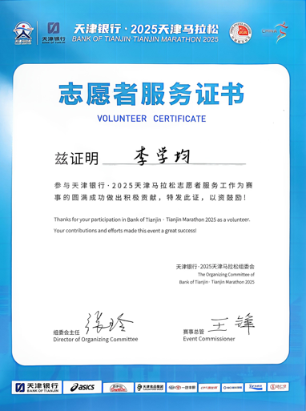

经历导览
业务实践、数据分析、公共服务与现场协同Internship · Game Theory & Decision Algorithm
中科闻歌 · 博弈论与决策算法研究员
围绕金融风险管理中的多主体关联关系开展分析，搭建智能体用于实时监控风险节点，使复杂关系网络中的异常变化能够被更直观地识别和追踪。
- 梳理金融风险场景中的主体关系、风险传导路径与节点关联结构。
- 将博弈论视角引入多主体风险行为分析，辅助判断风险节点的重要性与联动特征。
- 参与智能体监控框架搭建，使模型分析结果能够服务于实时风险识别。

Internship · Financial Analysis Agent
温州昶宏电子科技有限公司 · 财务助理
面向企业经营分析需求，搭建财务分析智能体并可视化收支数据，辅助经营分析报告撰写，把数据整理、指标观察和业务表达结合起来。
- 整理公司收支数据，提取收入、成本、费用等经营分析维度。
- 通过可视化方式呈现财务变化，辅助发现异常波动与经营趋势。
- 参与经营分析报告撰写，将数据结论转化为管理层可理解的业务表达。

Volunteer · Smart Ticketing Service
瑞安站春运「暖冬行动」· 青年志愿者
在春运高峰期参与车站现场服务，负责智慧票务系统引导，协助乘客完成移动端操作，提升现场通行效率和服务体验。
- 在客流密集场景中进行秩序维护、流程引导与问题解答。
- 协助百余位乘客完成移动端票务操作，降低系统使用门槛。
- 积累面对真实用户的沟通、应急处理和现场协作经验。

Volunteer · Event Operation
2025 年天津市马拉松起点处 · 志愿者
参与赛事起点处志愿服务，协助维护起点秩序、引导参赛者顺利开赛，并配合后勤补给保障，提升大型活动现场组织经验。
- 参与起点区域秩序维护，保障参赛者按流程进入对应区域。
- 协助现场信息引导、人员疏导和基础后勤服务。
- 在高密度人群场景中训练执行力、协同意识和服务意识。
